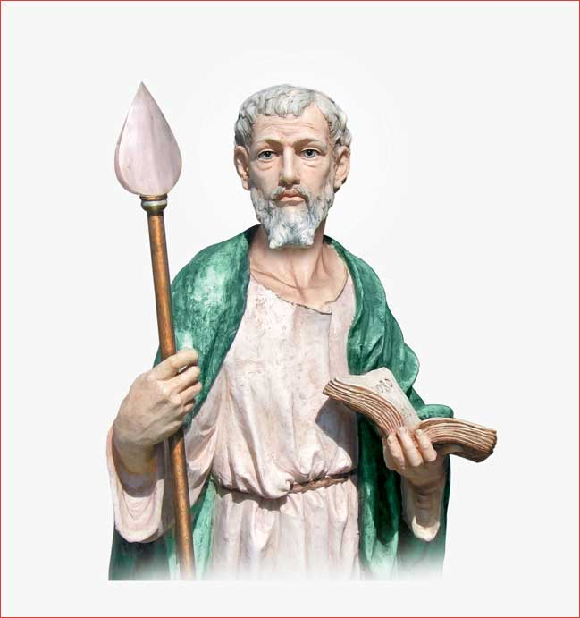

St.Thomas, referred to as Didymus, in the Gospel of St.John is one of the twelve disciples of Jesus Christ. He is one of the prime witnesses to the resurrection of Jesus.St.Thomas arrived in India in the year 52 AD at the then famous port of Cranganore in the Malabar Coast. He travelled extensively all over the world for seventeen years. He spent four years in Sind, six years in Malabar and seven years in Mailepuram, or the present Mylapore in Madras.
Certain sections of Sindhis and especially "Tatanagar Fakirs" venerate the apostle under the name of "THUMA BHAGAT". Ancient martyrologies of both the Catholic and Oriental Churches always connect St.Thomas to India and the Fathers of the Church have also regularly referred to his visit to India.
Legends say that a huge log of wood was washed ashore near what is now called Santhome, which could not be moved even by elephants. St.Thomas used his girdle and pulled it out. The king of Mylapore was so taken up that he donated the huge log of wood to St.Thomas, who built a small chapel with it.There are many literary works that proudly attest to the fact that Santhome offers shelter to St.Thomas the Apostle. He was a favourite of the local king Mahadevan. However, his ministers disliked him. He took refuge in the jungle of Little Mount, which is about four miles away from Santhome.

Little Mount is a hillock, which is eighty feet above sea level. A cave on the hillock provided him an ideal shelter. The amazing feature of the cave is that one can still see the fingers of St.Thomas clearly imprinted on the rocks of the cave.
There is also a miraculous spring called St.Thomas fountain. This was an answer of the Apostle to the thirsty people who used to come and listen to him. The water from this spring offers healing to all who drink it trusting in the powerful intercession of St.Thomas.
If Little Mount goes down in history as a place that sheltered St.Thomas, Santhome is the sacred place that possesses his tomb. St.Thomas Mount will ever be remembered as the Calvary of St.Thomas. It was at St.Thomas Mount that he was pierced with a spear while praying in front of the cross. Even today pilgrims are moved by the Bleeding Cross, which is believed to be carved by him.
After his death, his body was buried in the Church built by him. A pot containing earth, probably moistured by his blood and the lance with which he was pierced were both buried in his tomb. In the 10th century AD Christians from Persia, founded this Christian village of Santhome, and then they built a Church and tomb over the burial site of St.Thomas.
The Portuguese who came to India in 1523 AD found a small shrine called "Ben Thuma", that is, the house of Thomas, in the custody of a Muslim. The Portuguese then built a Church and erected the Diocese of Santhome-de-mellapore. Dom Sebasteao-de-Pedro of the Augustinian Order was the first bishop of the Diocese of Mylapore.
Later a fort was built to protect the Portuguese settlement of Santhome. Over the years it was destroyed by the constant attack of the Dutch and Golcondas.As for the church, that too has much history behind it. This lovely Gothic Church is an architectural treasure.
During the time of the Portuguese there were five Roman Catholic Churches, including what is the Cathedral Basilica today.St.Thomas is renowned for working numerous miracles. His tomb was opened four times in the history of the Basilica.
It was opened for the first time to cure an ailment of the son of the Raja Mahadevan. St.Gregory of Tours recorded this in his book 'De Miraculis Sti Thomae'. It was opened for the second time between 1222 and 1235 when most of the Saint's relics were removed to Ortona in 1258 for a troubled journey on the East Coast of India. His relics are present in Ortona even today.
It was opened for the third time in 1523 by the Portuguese who arrived at Mylapore to rebuild the ruined Church over the tomb of the Apostle, St.Thomas. Dom Jose Pinharno, the bishop of Mylapore, opened it for the fourth time in 1729 to give pilgrims the earth from the sepulcher. It was at this time a bright light appeared from the tomb.
Today, the Basilica preserves a small bone of the Saint and the head of the lance with which the Saint was pierced. In 1954, his Eminence Cardinal Eugene Tasserant brought a piece of bone from the hand with which the Saint touched the side of Jesus after his resurrection, to Santhome Cathedral Basilica.
Marcopolo, a Chinese traveler, has mentioned about this visit to the blessed tomb of St.Thomas in his travelogue. He has also mentioned about St.Thomas Mount where a Nestorian monastery was established.
The Cathedral Basilica is also proud of possessing a very ancient image of Our Lady of Mylapore. In 1545 St.Francis Xavier prayed before this statue before going to the Far East to preach the kingdom of God.The tomb of St.Thomas is the very nucleus of the present day Santhome Cathedral Basilica. This makes the soil in which he was martyred sacred and exclusive.
The tomb of St.Thomas is the very nucleus of the present day Santhome Cathedral Basilica. This makes the soil in which he was martyred sacred and exclusive. The St.John Paul the II nd visited and prayed at this Holy place in the year 1986 when he came to India on February 5th. St. Thomas Feast day is celebrated every year on 3rd of June.
St.Thomas is the patron for:
Copyright © 2024 Santhome Church. All Rights Reserved